Last modified: Sun Sep 19 20:48:38 HST 1999
One way that size can provide insight is by providing an indication of progress toward completion of a certain phase of development. For example, suppose that you have determined during initial planning and design that the size of an object-oriented system will be 32 classes. If 8 classes have been implemented so far, then you might infer that you are approximately 25% of the way through implementation. On the other hand, you might also have determined during design that these same classes consist of 160 methods, and the 8 classes implemented so far contain 80 methods. Using methods rather than classes as your size measure, you would now infer that you are 50% of the way through implementation. Yet a third estimate of implementation completion could be calculated by using lines of code as the size measure, and comparing the planned total lines of code to the actual lines of code implemented thus far.
The ability to calculate multiple, possibly differing estimates of progress toward completion is actually a strength of this method, not a weakness. For example, if all three measures resulted in an estimates of completion that ranged between 45% and 55%, then you might feel reasonably confident that you are about halfway through implementation. On the other hand, if the three estimates ranged from 15% to 80%, then you might feel considerably less confident of your actual progress toward completion, unless you could account for the disparity. (For example, you might have one very large class and four small helper classes, and implement the helper classes first. In this case, progress based upon implemented classes would lead to an estimate of 80% completion, which of course would be unrealistically high.)
A second way you can use size is to provide insight into development rate, which is the size of a work product divided by the time required to build it. For example, my development rate on the initial draft of a chapter of this user guide was approximately 400 words per hour. As before, different size measures can lead to different values of development rate---other possible development rates for this same chapter were 0.8 sections per hour, and 1.1 printed pages per hour.
Development rate is often referred to as "productivity", so we will sometimes use this term, even though "productivity" is somewhat misleading. The problem with this term is that most people think that "high productivity" is always preferable to "low productivity". However, it is usually possible to achieve very high productivity by sacrificing quality. I could probably double my development rate on this user guide, and thus my "productivity", by simply typing as fast as possible and not worrying at all about whether I spell words correctly or structure my sentences and paragraphs to make sense to the reader. But this high level of "productivity" would not result in a usable work product.
Development rate can be quite useful during planning. For example, I discovered that my development rate on the initial draft of the first several chapters of this user guide varied between 350 and 580 words per hour. When planning a new chapter, I estimated that it would require about about 6000 words. Using my prior development rates, I could thus estimate that the initial draft of the chapter would require between 10 and 17 hours to write. (You will learn later about more sophisticated approaches to time estimation, but this example gives you the basic idea and may be quite sufficient in many contexts.)
Development rate can also be useful for providing insight into your development "efficiency"---in other words, your development rate when combined with other factors such as quality and usability. For example, I hope that over time, as I become more experienced with the writing of user guide chapters, I will become more efficient, and be able to improve my development rate without sacrificing quality. The goal of the Leap toolkit is to provide you (and me) with mechanisms and supportive infrastructure that enable us to replace blind "hope" for improved efficiency with concrete approaches.
A third way to use size is to provide insight into the frequency of occurrence (i.e. density) of certain characteristics within a work product. For example, a popular characteristic to measure is defect density: the number of defects divided by the size of the work product. For example, if a review discovers 14 major defects in a software module, then if the module contained 7 classes, the observed defect density could be calculated as 2 major defects per class. (Defects per method and defects per thousand lines of code (KLOC) and so forth are also common density measures.)
Tracking changes in the density of certain types of defects can be a useful mechanism to evaluate the effectiveness of changes to the development process. For example, assume that a development group is having significant problems with null pointer exceptions escaping into released code. To combat this problem, they institute checklists and reviews in an attempt to prevent this kind of defect from escaping into their public releases. Tracking the density of occurrence of this defect over a few projects can help the team discover both if the reviews and checklists are effective in finding these defects, and if the customers are reporting this type of problem less.
Of course, measuring size in order to be able to calculate density isn't absolutely necessary for tracking defects. In the above situation, one could have instead simply tracked the total number of reported null pointer exceptions over time without regard to the size of the systems involved. However, this can lead to misleading results. For example, assume that the total number of reported defects went from 100 in January to 50 in February to 25 in March. Looks like our checklists and reviews are having quite a positive impact, right? Well, now let's factor in size, and assume that 10,000 lines of new code were released in January, but only 5,000 lines of new code were released in February, and only 2,500 lines of new code were released in March. Thus, while the total number of observed null pointer defects in released code decreased substantially from January to March, the null pointer defect density actually stayed the same. The addition of size to "normalize" the defect data helps to reveal that the addition of reviews and checklists were not nearly as effective as the defect data alone might indicate.
In summary, size measurement has a number of useful applications in the development of work products, from tracking progress, to planning and estimation, to evaluating the effectiveness of changes to development procedures. However, measurement and application of size is not straightforward---we have already seen that there is more than one way to size a system (classes, methods, and lines for software, chapters, sections, words for technical documents, etc.), and that certain applications of size measures can be uninteresting or even counter productive (i.e. the pursuit of higher development rates without regard to quality or other important factors). The next section introduces some important characteristics of size measures that are implemented in Leap. Subsequent sections introduce Leap tools for representing size, followed by manual, then automated size measurement examples.
In Java programming, one hierarchy of measures is lines, methods, classes, and packages. Each line can be aggregated with one or more others to represent the size of a single method, each method can be aggregated with one or more others to represent the size of a single class, and so forth. In technical report writing, one hierarchy of measures is lines, paragraphs, sections, chapters.
Another important characteristic of a hierarchical size measure in Leap is that each object at each grain size has a unique membership to an object at the next higher grain size. For example, each line in Java program can be uniquely associated with one and only one method. Each method can be associated with one and only one class. In the realm of tech reports, each word of text can be associated with one and only one paragraph, each paragraph can be associated with one and only one section, and so forth. You can visualize this as a tree structure. Interestingly, some "hypertext" work products can violate this characteristic, in that a certain section, for example, might be associated with multiple chapters. In these cases, you'd have to determine some way to assign a "primary" chapter to each section for the purpose of size measurement using Leap.
Note that a single size measure grain size is, by definition, hierarchical. So, a size measure consisting only of height in feet is a valid hierarchical size measure. A size measure consisting only of weight in pounds is a valid hierarchical size measure. Which neatly brings us to the next concept, multiple size measures.
Many work products can also have multiple, independent size measures. For example, in Java, you can measure size in lines of code, and you can also measure size in function points. These two measures are not hierarchical (each line of code is not necessarily associated with one and only one function point), and in fact there is no straightforward way to convert a size in lines of code to a size in function points or vice-versa. (There are some methodologies for "back-firing" lines of code to function points, but these are approximations and their validity is contested. Function points were invented, in large part, as an independent size measure not suffering from the problems associated with lines of code.)
Calculating the "incremental" size of a work product is very difficult to do precisely, and necessitates certain trade-offs. To understand why this is so, you must first recall why you calculate size in the first place. As noted in the first section of this chapter, size is useful for (among other things), tracking progress, planning and estimation, and evaluating the effectiveness of changes to development procedures. In most of these cases, a given work product size is intended to correlate with "amount of work accomplished." In the case of building a work product from scratch, this relationship is often easy to establish: you started with nothing, you build a 30 page technical report, so the "work you have accomplished" is 30 pages worth of technical report.
Now, however, assume that you start with a 30 page technical report, and then you work on it for a week, and the result is a (much improved) 28 page technical report! How do you properly indicate the "amount of work accomplished" during this week? On the one hand, you don't want to just use the total document size of 28 pages, since this does not take into account the fact that you started with a 30 page document, and presumably re-used much of it. On the other hand, you don't want to simply subtract the two values, since -2 doesn't even make sense as a size.
In Leap, the basic approach is to perform a "difference" operation on the two documents. Let's say that the original 30 page technical report consists of 1000 lines, which are organized into 100 paragraphs, which are in turn organized into 10 sections. After working for a week, you invoke a software tool that takes the original and revised version of the technical report, and compares their two structures. This program compares the two documents line by line, and somehow determines how many lines changed in each paragraph, if any. It also associates each changed paragraph with its section. As a result of this program's effort, it is now possible to figure out how many lines, paragraphs, and sections you changed during your week of work. This kind of "difference" seems a much more reasonable representation for the amount of work accomplished in an "incremental" context.
Incremental size measurement is hard, and Leap's difference approach is not without problems. First, we will often need a program to do this differencing for us--for large work products, it will be way too much effort and too error-prone to do by hand. Second, there are certain "implementation details" that need answering---for example, do you represent the work required to delete sections of a work product, and is this work equivalent to that required to add (or modify) an equivalent amount of work product? Leap doesn't require that you decide on these implementation details in only one way, though the approach does require that you stay consistent across work products so that the results are comparable.
We have embodied one set of answers to these implementation details in a software system called LOCC, which will be discussed in more detail later in this chapter. For now, it is enough to understand the need for incremental size counting and the utility of some sort of difference-based mechanism to address this need.
A third problem with incremental size measurement is management of the resulting data in Leap. To make this concrete, let's return to the tech report example. Assume that you want to record Leap data on your work on the initial 30 page version of the tech report. To do this, you would define a project (named, for example, "Leap User Guide, Size Chapter"), and record the time you spend, the defects you make, and of course the size of the tech report that results from this effort. Now, assume that several months later, a new release of the system requires you to make some major updates to this document. You would like this to be a separate project (named, for example, "Leap-6.5.4 Size Chapter Updates"). Now, you need to enter into Leap the new size difference data and distinguish it from the old size data even though the size data was generated from the exact same file at different times! In other words, file names alone are not sufficient in Leap to associate size data with projects, because two different projects can have size data based upon the same file as it existed at different points in time. To resolve this problem, Leap requires you to specify the start time and end time for each project and the files included in it. Leap also requires that each size entry include the name of the file and a timestamp representing when the size data was collected. Leap uses this information to "match" projects with their size data. Several examples of this in the next section should make the process clear.
Leap splits the task of size representation between two tools: Iole and Aama. (Iole is the Hawaiian word for the Hawaiian Rat, and Aama is the Hawaiian word for the Hawaiian Black Crab.) Aama allows you to define individual size measures (such as a measure for Java source code, or techreports, or Powerpoint presentations), while Iole is used to enter size data about specific work products (such as the Foo Version 2.3 software system, or techreport csdl-99-01). Leap uses the Project definition tool, Ilio, to connect size data to specific projects and thus other data such as time and defects.
To fully understand size representation in Leap, it helps to break the complexity down into a number of different scenarios. We'll start with the simplest first.
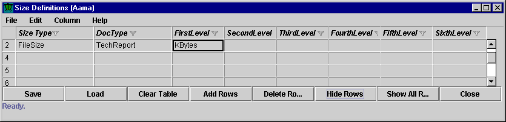
In this case, the size measure definition is very simple. The name of the size measure is "FileSize", it applies to documents of type "TechReport", and the units are KBytes. Next, let's look at the project definition as shown in the Ilio tool:
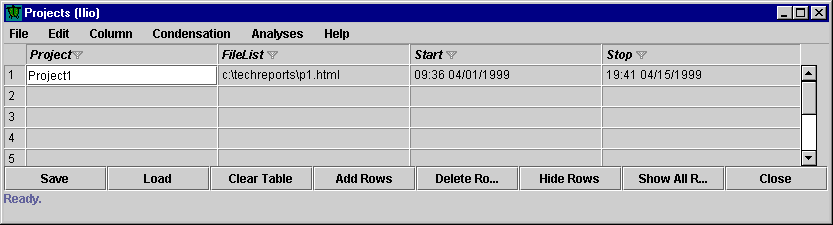
Here, we see that the project name is "Project1", and that it is associated with only one work product, called "p1.html", which is located in the directory "c:\techreports". (Note that the syntax of the FileList field supports wild cards and multiple file specifications, although this is not shown in this example. The extended syntax is covered in detail in the chapter on Project definition. Finally, note that you actually use the Hee tool to define a project. Once you press "Update" within Hee, the data will appear within Ilio as shown above.)
It is also important to note the start and stop times: Project1 started on April 1 and ended on April 15. Now, let's finally look at the actual size entry as shown in the Iole tool:
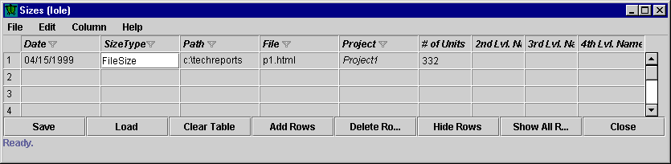
This size entry was generated on April 15, and records a size using the FileSize size definition. The path of the work product is "c:\techreports", the file is "p1.html", and the number of KBytes in the work product is 332.
Now, notice that the "Project" field is filled with "Project1", but that this field is italicized. In Leap, field values in italics mean that the field is automatically calculated from other data and cannot be entered directly by the user. Thus, Leap automatically assigns projects to size entry data. Understanding this assignment process is crucial to avoiding intense frustration when using size data in Leap, and so the next section discusses this important issue in detail.
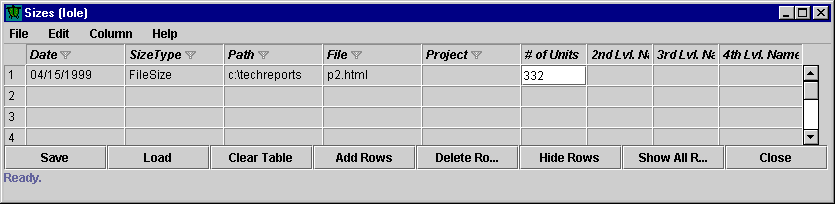
Notice that the Project field is now blank, indicating that this size entry is no longer associated with any project.
To violate the second constraint, I'll change the file name back to p1.html, but change the date the size entry was generated to March 15:
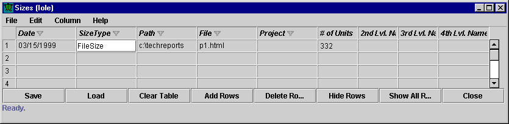
Once again, the Project field is blank, because now the size data was generated prior to the start time of the Project. Start and end times are actually tricky, because although the Date is displayed showing only the month, day, and year, it is stored internally as a timestamp that includes seconds, hours, and so forth. Thus, if your size entry was generated at 12:00 noon on April 1, 1999, but your project ended at 11:55am on April 1, 1999, the size entry will not be associated with the project, even though both fields say "4/1/1999". If you confront this situation, simply tab into the date fields whereupon the full timestamp will be displayed.
The third constraint is designed to allow you to enter size data during the project for analysis, and use only the latest set of data for the current analysis. For example, let's say you calculate and enter the size of your p1.html work product once a week. The third constraint ensures that only the most recent size entry data of type FileSize will be used within the time frame of the project. The following screen illustrates this constraint in action:
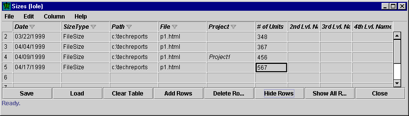
Let's look at each of these entries in turn. The first entry, on 3/22/99, is not included in Project1 because its date falls before the start date of Project1, which is 4/1/99. The second entry, on 4/4/99, does fall within the Project1 time period, but is not included because there is a later time entry from 4/9/99 for the same file that falls within the Project1 time period. This entry, from 4/9/99, is assigned to Project1. Finally, the last entry from 4/17/99 falls after the Project1 end date (4/15/99), so it is also not assigned to Project1.
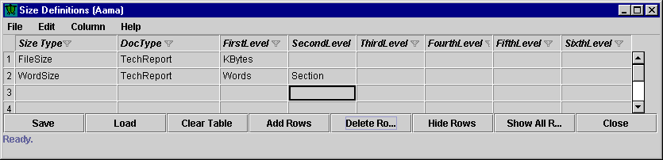
Unlike FileSize, this measure is truly hierarchical because we have more than one "level" or grain size to measure. Now, let's see what some actual hierarchical size data looks like:
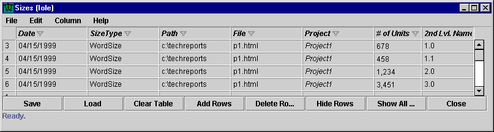
There are several interesting things to note about this example. First, you can see that we now have four entries associated with Project1. How did we get four entries to simultaneously satisfy the three constraints for assignment to Project1? Before solving this assignment puzzle, let's first discuss exactly what this hierarchical size measure actually means and motivate why we want all of these four entries to be assigned to Project1.
In every hierarchical measure, the First Level provides the "units" value for the measure. In the case of WordSize, the "units" value is "Words". Unlike our previous measure, FileSize, the WordSize measure also includes a second level called "Section". This second level represents an aggregation of first level units. When a size measure is defined with a second level, such as "Section", then each size entry represents the size associated with a single instance of the second level section. So, in the case of the p1.html work product, the size entries indicate that this work product consists of four sections, named "1.0", "1.1", "2.0", and "3.0". These sections contain 678, 458, 1,234, and and 3,451 words respectively. The total size of p1.html in words at the time of Project1 is thus the total of all of the WordSize entries, or 5821 words.
In summary, with "true" hierarchical size measures---those with more than just the units measure defined---the overall size of the work product must be represented as a set of size entries, one for each aggregation listed in the "Second Level". The total size of the work product for a project is calculated as the sum of the units value (which should always be a positive integer, incidentally).
Now that you understand why we need to provide multiple size entries, let's solve the project assignment puzzler. The issue is with constraint (3), which says that only the most recently timestamped entry for a given work product and Size Type will be associated with the matching project. In our current example, we have four entries for the same work product and Size Type, so how did we get them all to be "most recently timestamped"? The simple answer is to provide them all with identical timestamps! If the timestamps had differed by even a single second, then only the most recent entry would have been used. Since they were all identical, all of them were used. (When entering values manually into Iole, the easiest way to obtain identical timestamps is to select an entire timestamp from one entry, copy it, and then paste it into all of the other entries.)
A common misconception with hierarchical size measures is that you can express the entire size of a work product in a single size entry. For example, novice Leap users often try to create a size entry like this:
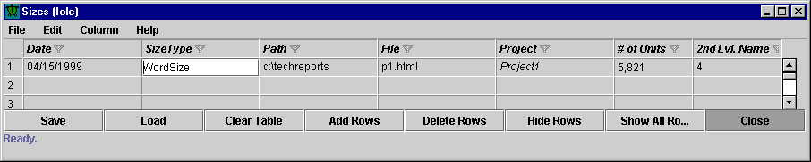
Here, the user is attempting incorrectly to represent the idea that p1.html has a total size of 5,821 words which is divided somehow among 4 sections. But this is not how Leap interprets this entry. Instead, Leap interprets this entry as p1.html consisting of a single section named "4" with 5,821 words in that section.
The Leap representation for hierarchical size entries can result in the requirement for many size entries in order to fully represent complex work products. Consider the JavaSize hierarchical definition, which consists of lines, method, class, and package. Here is a portion of the size table for one Java software system, with a few fields hidden for display purposes:
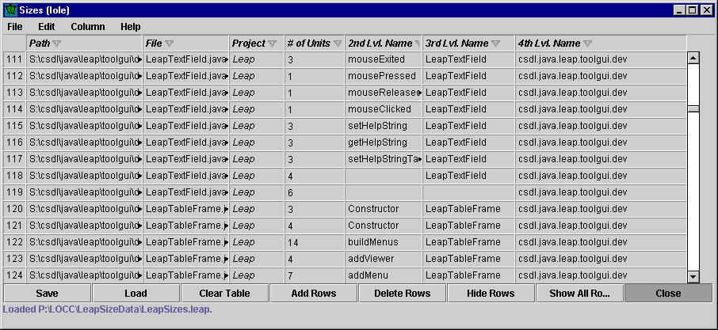
Notice that since the second level grain size is "method", each method in the software system has its own entry in the size table, and that the first level units (lines) indicates its size. The advantage to this representation is that it is possible to obtain accurate aggregate data, such as the number of methods, the number of classes, the number of methods in each class, the number of lines in each class, the number of lines in each package, and so forth. The principal disadvantage of this representation is that the entry of hierarchical size data for complex work products like software systems virtually requires tool support, such as LOCC.
You might also notice that some of the entries have one or more blank fields. This is legal, and is a way to indicate "loose" size at one or more levels of aggregation. For example, in Java there can be lines of code not contained within any method in a class (for example, declarations of instance variables). LOCC counts these lines and creates a size entry for them containing a blank method field. Similarly, in Java there can be lines of code not contained within any particular class (such as the import statement). LOCC counts these lines and creates a size entry with a blank method and blank class fields. (Strictly speaking, what really happens is that LOCC defines a new method with a "blank" name and a new class with a "blank" name to hold this size data.)
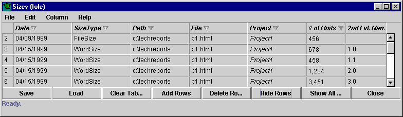
In this screen, we return to our prior techreport example, and simply include both the FileSize and the WordSize entries. Note that since the first size entry is of a different size type than the remaining four, its assignment to a project is performed entirely independently. Thus, entries of type FileSize don't have to have the same time stamp as entries of type WordSize in order to be assigned to the same project.
Well, at last there is some good news. There are no new concepts to introduce in order to understand incremental size measurement. In fact, Leap does not distinguish between a "total" size and an "incremental" size! This is an important point: Leap assumes that the size data it loads correctly represents the amount of "size added" during a particular project. If, for example, a project starts from scratch, then it is up to the user to invoke a tool that computes the total size of the work product and stores the resulting size entries in a file for loading into Leap. If, on the other hand, a project starts with an initial version of a work product and enhances it in some way, then it is up to the user to invoke a tool that compares the original version to the new version, computes the incremental size, and stores the resulting size entries in a file for loading into Leap. LOCC is an example tool that provides two interfaces, one for computing total sizes of work products, an done for computing differences between two work products.
Incidentally, once you start needing incremental size measurement, you quickly recognize the advantage to requiring a separate size entry for each second level aggregation (such as methods in JavaSize). This advantage is the ability to easily represent exactly which methods, classes, and packages you "touched" during a particular project.